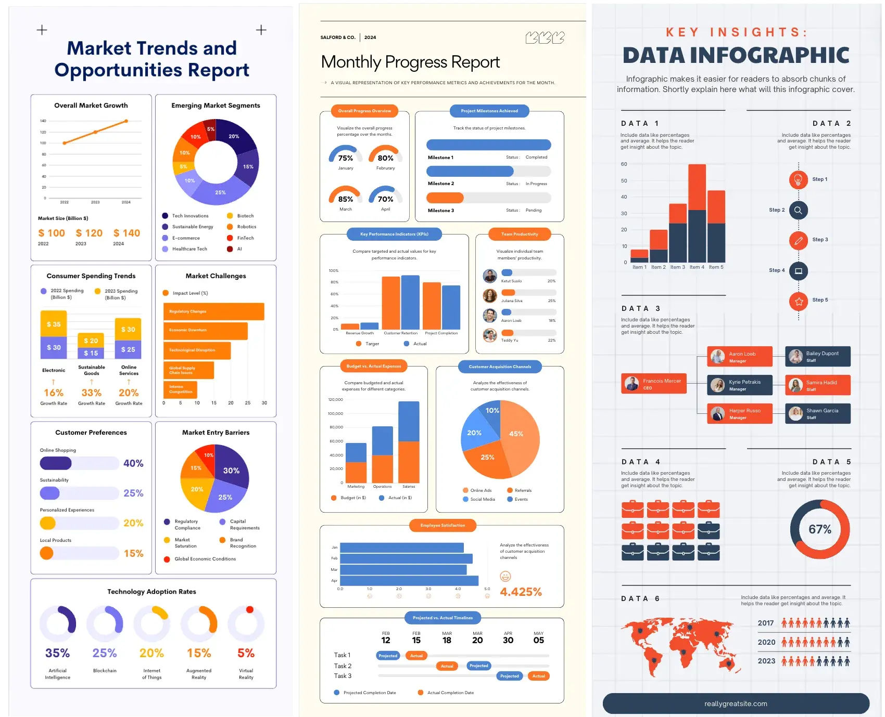

Four poster options. All use the locked text from China vs Africa — Prisoners of Geography V3.
The diagrams (Hu Line, buffers, Nine-Dash, north–south break, 1 in 4) come from the A3 poster.
What P1–P4 are actually doing
These are kit posters, not stories. The job is to steal their system, not their dummy charts.
P1 — Flat kit, navy / coral / white
A dark header bar brands the sheet before the content starts.
One oversized numeral does the hook (their 305; ours can be 1/4, 3×, No.1 navy).
Pins on a grey world map locate the subject without a full cartographic essay.
Modules repeat the same three colours and the same stroke weight: donut, bars, pictograms, bubbles, laptop.
It reads top to bottom as a stack of widgets, with lots of air between them.
P2 — One metaphor, teal on teal
The giant eye is the thesis. Everything else is a caption to that picture.
Two-tone only. No third accent. Hierarchy comes from scale.
Pictogram people (4 of 5) make a ratio instantly, which maps to our 1 in 4.
A path or connector at the bottom turns a poster into a sequence.
Icons argue (hat, stopwatch, eye) instead of repeating the same card six times.
P3 — Banner, map, black number tiles
A yellow ribbon title is the only loud object besides the map.
The world map is the largest thing on the page; countries that matter are hatched and flagged.
Three black tiles (23 / 64 / 14) give a second rhythm after the map.
A people row is a pictogram legend, not decoration.
Two volumes — map first, then stats — is a clean chapter split for China then Africa.

P4 — Card dashboard, three columns
Every insight is a self-contained white card with one chart and one claim.
A numbered “key insights” column is the comparison, not a leftover sidebar.
Orange / navy / cream, no texture, no serif display — it feels like a brief.
Paired charts (actual vs target, stacked bars) are how it shows difference.
This is the right system if the poster must hold the full V3 paragraphs.
What we take from the A3 poster
The A3 is the only reference that already speaks this brief. We keep its diagram language and drop it into four different visual systems.
China diagrams
Hu Line: Heihe → Yunnan, sparse west / dense east
Concentric core + buffer ring + neighbour dots
Nine-Dash dashed arc and trade-route label
Africa diagrams
North–south axis broken by waterfalls
Organic ethnic blobs vs a European grid
Monument “1 in 4” with four person marks
Structure
Red / green legend dots or flags
Quote + page as a caption, then the paragraph
A full-width comparison band, larger than the point cards
Option 1
A3 diagram edition
Closest to the attached poster: white-cream sheet, three China cards with diagrams, a dark comparison band, three Africa cards. V3 wording in full.
Option 2 · after P1
Flat kit
Navy bar, oversized 1/4 · 3× · No.1, pin map, bubble tags. Same six points and A3 diagrams, widget rhythm instead of a literary page.
Option 3 · after P3
Banner + map
Yellow ribbon, flagged world map, black number tiles, then China / Africa as two volumes.
Option 4 · after P4
Three-column brief
China | key insights | Africa. Holds the long V3 paragraphs without asking anyone to hunt around a map.